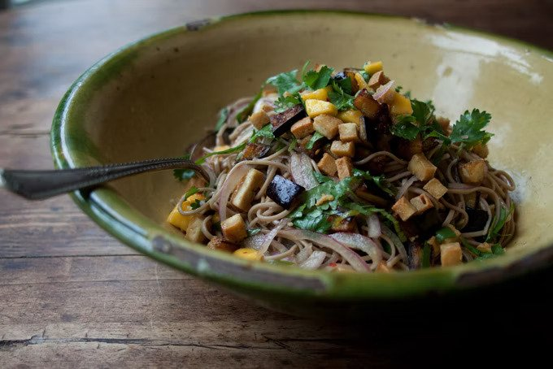

Soba Noodles with Aubergine and Mango Recipe
Spicy brown sugar and lime-sauced soba noodles with tofu, eggplant, mango and lots of herbs.

Serves: 4-6 | Prep Time: 15 Minutes | Cook Time: 30 Minutes
Ingredients
- 120ml brown rice vinegar
- 40g brown sugar
- ½ teaspoon sea salt
- 2 garlic cloves, peeled and minced
- ½ fresh red chilli, minced
- 1 teaspoon roasted sesame oil
- zest and juice of 1 lime
- 80ml grapeseed oil
- 1 medium aubergine (340g), cut into 1cm cubes
- 225g dried soba
- 1 large ripe mango, cut into small chunks
- ½ medium red onion, finely sliced
- handful of basil, slivered
- handful of coriander, chopped
Method
- While you prepare your ingredients, bring a large pot of water to a boil.
- In the meantime, make the dressing by combining the vinegar, sugar, and salt in a small saucepan over medium heat. Cook, stirring, for up to 1 minute, or until the sugar dissolves. Remove from heat and add the garlic, red pepper flakes or chile, and sesame oil. Allow to cool, then add the lime zest and juice.
- Heat the grapeseed oil in a large skillet and shallow fry the eggplant/aubergine in three batches, until deeply golden. Transfer to a large plate lined with paper towels and sprinkle with a generous pinch of salt.
- Cook the soba noodles in a large pot of boiling salted water, per package instructions, or until just tender. Drain and rinse under cold running water. Shake off as much of the excess water as possible, then leave to dry in the colander or on a tea towel. If you're not using the noodles soon, toss with a tiny splash of olive oil to prevent the noodles from sticking to each other.
- In a large mixing bowl toss the noodles the dressing, mango, tofu, eggplant, onions, and most of the herbs. You can now set this aside for an hour or two before serving topped with the remaining herbs.